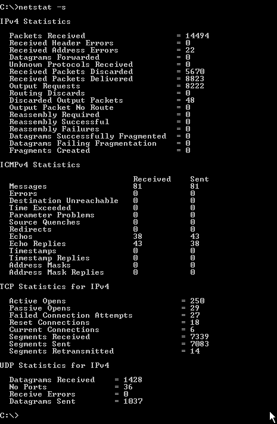

TCP/IP е сложен сбор от протоколи. Повечето реализации на отделните производители включват най-различни помощни програми за разглеждане на конфигурационната информация и отстраняване на проблеми. Помощните програми, които изпълняват една и съща функция, могат да имат различни имена, дадени им от различните производители.
Ping (Packet Internet groper )
Това е проста, но много полезна помощна програма за работа от командния ред, включвана в повечето реализации на TCP/ IP. Ping може да се използва както с името на хоста, така и с IP адреса, за да се тества IP свързването. Ping работи, като изпраща ICMP ехо заявка към компютъра местоназначение. Приемащият компютър след това изпраща обратно съобщение за ICMP ехо отговор. Също така е възможно да използвате ping, за да разберете IP адреса на даден хост, когато знаете името. Ако въведете командата

Една друга помощна програма, nslookup, връща IP адреса да дадено име на хост и хост името за даден IP адрес.
Windows и UNIX/ Linux операционните системи използват командата ping от командния ред. Съществуват и ping реализации от независими производители, някои от които предоставят графичен интерфейс.

ARP
Протоколът ARP (Address Resolution Protocol) е средството, чрез което компютрите а мрежата съпоставят логически IP адреси с физически хардуерни (МАС) адреси. ARP изгражда и поддържа таблица, наречена ARP кеш, в която се съдържат тези съпоставяния. RARP.ce използва от машина, която не знае собствения си IP адрес, за да получи информацията на база своя МАС адрес.
Помощната програма ARP също работи от командния ред и се разпространява с TCP/IP стека на Windows и UNIX/Linux. Тя може да се използва за разглеждане и промяна на съпоставянията между IP и МАС адреси. C помощта на програмата ARP можете да покажете съдържанието на кеша и да добавяте или изтривате специфични записи:

C командата аrр могат да се използват следните ключове:
- аrр -а - Показва кеша
- аrр -S - Добавя перманентно съпоставяне между IP и МАС адрес
- аrр -d - Изтрива запис
В отделните реализации на производителите са включени и други ключове.

Netstat
Често пъти е полезно да разгледате мрежовите статистики. Командата netstat се използва в Windows и UNIX/Linux, за да покаже информация за TCP/IP връзките и протокола.
Командата netstat предоставя списък с връзки, които са текущо активни:

Можете да видите протоколите, използвани за всяка връзка, името на локалния компютър и номера на порта, използвани за връзката, „чуждестранният" (foreign) адрес (името на отдалечения компютър) и състоянието на връзката.
Командата netstat може да се използва с няколко ключа:
| Ключ | Функция |
-а |
Показва всички връзки и слушащи портове |
-е |
Показва Ethernet статистики |
-n |
Показва адреси и портове |
-р1 |
Позволява ви да показвате информация само за избран протокол |
-t, -u, -w, -x2 |
Позволява ви да показвате информация за TCP, UDP, RAW или сокети |
-r |
Показва маршрутната таблица |
-s |
Предоставя обобщение на статистиките за всеки протокол |
1 Използва се с реализацията на Microsoft TCP/IP |
|
2 Използва се с реализацията на Linux ТСР/IР |
|
Netstat статистиките могат да бъдат полезни при отстраняване на проблеми с TCP/IP връзките. Следващият пример показва изобилието от информация, предоставяна в режим на обобщение (ключът -s). Докладите за грешки са особено полезни при диагностициране на проблеми с хардуера и маршрутизирането.


Ipconfig, ifconfig
Информацията за TCP/IP конфигурацията може да се изведе чрез използване на помощни програми, които зависят от операционната система - Ipconfig за Windows и Ifconfig за UNIX и Linux.Конфигурационните помощни програми могат да предоставят богата информация, включваща текущо използвания IP адрес, МАС адреса, подмрежовата маска и подразбиращия се шлюз; адреси на DNS и WINS сървъри; DHCP информация; разрешени услуги. Съществуват множество ключове, зависещи от производителя и специфичната помощна програма. Тука е показан пример, който демонстрира резултатите от използването на командата ipconfig с ключа /all в Windows XP.


Tracert и Traceroute
Често пъти е полезно да бъде проследен маршрута, по който даден пакет поема пътя от компютъра източник до хоста местоназначение. TCP/IP стековете включват помощна програма за проследяване на маршрута, която позволява да идентифицирате маршрутизаторите, през които преминава съобщението. В зависимост от вашата операционна система можете да използвате Tracert ( Windows) или Traceroute ( UNIX/Linux).
В следващият пример е използване командата tracert за да бъде проследен маршрута на пакетите от източника до местоназначението:

Както можете да видите, проследяването показва IP адрес и името на препращащия компютър или маршрутизатор. На пакета са му били необходими четиринадесет скока, за да достигне до своето местоназначение, което е хостьт с име www.google.bg. Времената за отиване и връщане (в милисекунди) са показани за всеки скок.